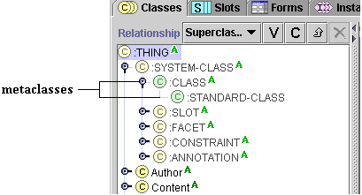
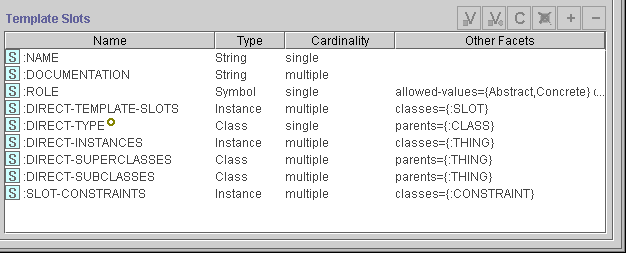
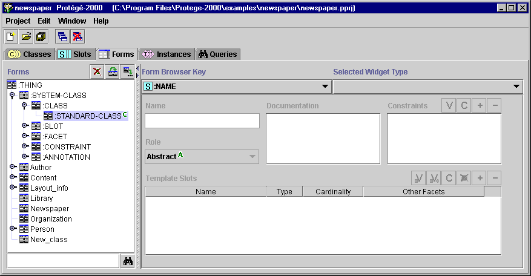
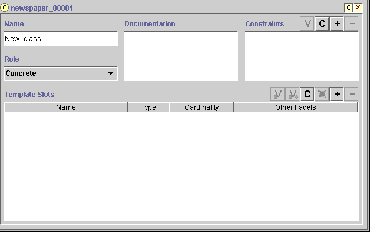

Metaclasses are part of the way Protégé internally handles and constructs classes. Although you might not use metaclasses directly in your project, Protégé uses its default metaclasses to build your classes and determine their properties. By creating your own metaclasses and defining their slots, you can create additional templates for your classes. This allows you to give your classes more complex properties and to greatly extend the power of your Protégé projects.
By creating a metaclass, you create a different template which you can use for selected classes. The new slots you create for the metaclass show up as widgets in the Class Form for any classes that use that metaclass. This allows you to attach additional information to your class at the class level. This is especially useful if you have several classes, each of which has a similar structure.
For example, suppose you are creating a knowledge base of wines and wineries. In this knowledge base, a type of wine is a class, while a specific label is an instance of that class. For your own reference, you could create a wine template that tells you, for each class of wine, which winery is, in your opinion, the best producer of that type of wine. Then, by applying the template to all the wine classes, you can store that information at the class level for each type of wine.
Metaclasses are part of the SYSTEM-CLASS hierarchy, which is included in every project. Metaclasses appear under the CLASS class. Every subclass of a metaclass is also a metaclass. All metaclasses appear with the green metaclass icon in the Class Relationship Pane.

By default, when a class is created as part of a project, Protégé treats that class as an instance of the metaclass STANDARD-CLASS. The properties of STANDARD-CLASS create the initial view of the class and determine the properties in the Class Form. You can look at STANDARD-CLASS to see how the slots for a metaclass translate to properties of a class.
The slots for STANDARD-CLASS are shown in the Template Slots pane when you select the class. STANDARD-CLASS uses the standard slot types (String, Symbol, etc.) that are used for all classes, but does so in a fairly sophisticated way. The :NAME slot is a standard String slot which stores the class name. :DOCUMENTATION is also a String slot. The :ROLE slot controls the role of a slot and determines whether it is Abstract or Concrete, with a default of Concrete.

The other slots are more complex. For example, consider the :DIRECT-SUPERCLASSES slot. This slot keeps track of the direct superclasses of a class by storing them as a list of instances. Internal programmatic operations add and delete instances to from the appropriate slot value whenever you make changes to a Protégé project. In this way, Protégé represents the structure of your project using its tools for storing and representing structure, in much the same way you create the project structure.
Once you have created a metaclass, you can create all or some of the classes in your project using the new metaclass as a template instead of :STANDARD-CLASS. Clearly, creating a subclass of :STANDARD-CLASS and then creating new slots or overriding existing ones vastly extends the capabilities of your project.
The widgets for each template slot on a metaclass can be viewed at the Forms Tab. In fact, internal to Protégé , the Class Form consists of widgets for :STANDARD-CLASS, and it could be modified using the Forms Tab. Look at the Forms Tab for :STANDARD-CLASS below and see how it reflects the template slots listed above. Note that the browser key is automatically set to :NAME.

Since any new class is by default created using :STANDARD-CLASS, the Class Form itself reflects the structure and layout specified for :STANDARD-CLASS at the Forms Tab. If you create a new project, then modify the Class Form at the Forms Tab, your modifications will show up for every class, whether existing or new.

Because of the power of metaclasses, you may want to be particularly cautious how much you experiment with a current project. It is a good idea to work on a copy.
Next: Creating a Metaclass